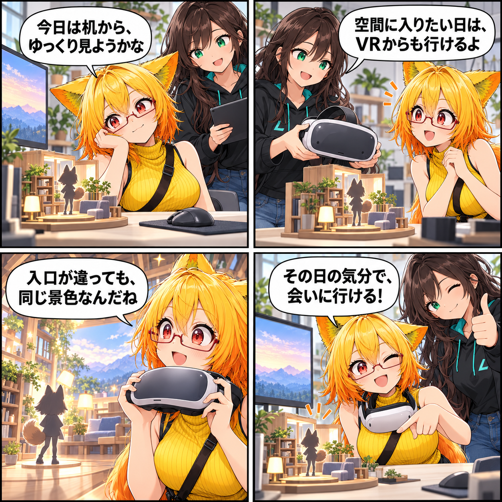

2026.10.18 / Development Log
閑話休題：同じ景色を、好きな場所から
VRASは、DesktopとVRのどちらの表示モードでもアバターを楽しめるように作られています。今日は新機能の進捗ではなく、同じスタジオへ自分に合う入口から入れる既存機能を見つめる閑話休題です。
今回は feature-spotlight（閑話休題） です。集計期間は2026-10-17 03:00:00 JSTから2026-10-18 02:59:59 JST、参照ブランチはViewerの
main です。集計終了時点のHEADは e489bb2e2ced26e7c42dc7bc34e7664684774baf、期間内コミットは0件でした。未コミット差分はありますが、期間内の実装事実を確定できないため当日の実績には含めません。集計終了時点で確認できる既存機能を紹介します。
今日は机から、それともヘッドセットから
まずDesktopで、マウスと画面を使ってゆっくり眺める。次にはVRで、同じアバターのいる空間へ入ってみる。VRASは、実行モードに合わせてDesktop ViewとVR Viewを切り替える構成です。
入口が違っても、会いに行く場所は同じ
作業をしたいときはDesktop、空間に入りたいときはVR。操作の入口は変わっても、アバターを見て、動かして、撮るためのスタジオであることは変わりません。
4コマの裏話
今回は、机の上の小さなスタジオ模型とヘッドセットを二つの入口に見立てました。画面の前でも、VRの中でも、好きな距離から同じ景色を楽しめることを描いています。これは当日の新規実装ではなく、現行のVRASで確認できる機能紹介です。
まとめ
VRASのDesktop / VR対応は、アバターと過ごす場所へ、その日の気分に合う入口を選べるようにするための土台です。
本日のひとこと
入口が変わっても、会いたい景色はここにあります。